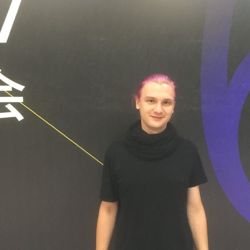
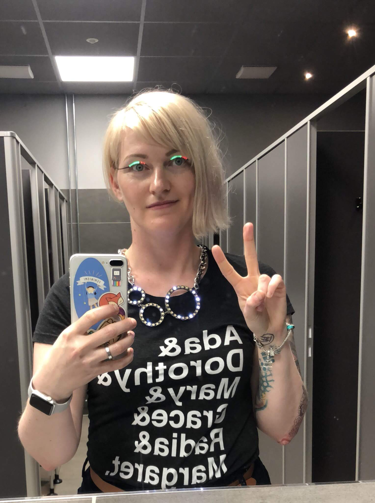
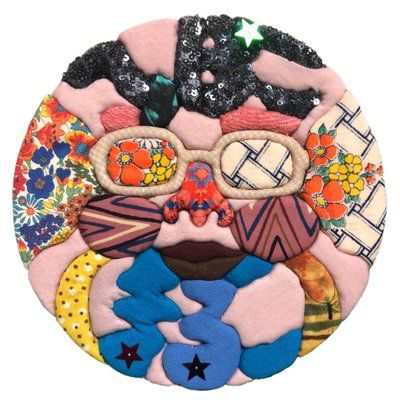

Speakers
-

Anna Henningsen
Node.js: The Road to Workers
Anna Henningsen
Over the last 2 and a half years, Anna has been one of the most active contributors to Node.js core. Currently pursuing a Master’s degree in mathematics in Germany, she is fueled by a passion for Node and its community.
Nov. 23, 11:15 - 11:45, Room A
Node.js: The Road to Workers
Workers, and threading support in general, have been one of the most frequently requested features
for Node.js over the last years. Finally, the finishing line is in sight and we’re pretty excited
to have experimental support available! This talk will tell you everything around the API, features,
use cases & alternatives, our roadmap, and the technical and social challenges that we had to
overcome to make it happen! -
-
Rachel White
Look What You MIDI Me Do!
Rachel White
Rachel White is a technologist, artist, and pretend-cyborg who is currently a Developer Experience Lead, member of the Node.js Community Committee, and co-host of the Changelog podcast JSParty. She is interested in new uses for old hardware, useless robots, VR/AR/MR, and bots. She has spoken internationally about Node.js, JavaScript, Creative Coding, IoT, Artificial Intelligence, NodeBots, and hardware. She's a previous artist in residence at Pioneer Works where she worked on a series that visualized what modern cybernetic augmentation could look like with todays hardware and special effects makeup. Her other interests include glitch art, 80s horror, and indie games. Her aesthetic is fog machines, laser lights, and broken VHS tapes.
Nov. 23, 10:45 - 11:15, Room A
Look What You MIDI Me Do!
Who loves pushing buttons? You? And you over there?
And the person behind you? Oh wait, everyone loves it?!!?
Of course they do, a button is irresistible.
Now… what if I told you that you could hook up a LOT of
buttons to your computer… and use it to do wild things with the web? I’m glad you’re listening!
Let’s take a journey into the Web MIDI api where the possibilities of the web aren’t just at
your keyboard fingertips anymore, they’re literally any MIDI compatible controller you have connected!
Want to make glitchy audio responsive visuals with WebGL shaders?
Rad, we can do that.
Want to create custom beats and have those input as a drum machine?
No problem when you throw a little Web Audio API in the mix.
Let’s dive in and find out how! -
-
Daniel Ehrenberg
JavaScript Class Features: A case study in TC39
TBADaniel Ehrenberg
Daniel Ehrenberg is a TC39 delegate who works for Igalia, a Galician free software consultancy. He lives in Catalunya.
Nov. 23, 13:00 - 13:30, Room A
JavaScript Class Features: A case study in TC39
ES6 classes were intentionally minimal, containing only public method declarations. Now, TC39 is
considering adding several other features to classes: private, fields, and decorators. In this talk,
we'll see how these proposals work in detail, the process that got them there, and how you can get
involved. TC39 needs your help to build features like these and the future of JavaScript.Nov. 23, 10:45 - 17:45, Room C
TBA
-
-
Fedor Indutny
Secret talk about vulnerability in Node
Fedor Indutny
Clicked "Fork" button on a node.js repo few years ago. Node.js TSC emeritus member, software engineer at PayPal.
Nov. 23, 13:30 - 14:00, Room A
Secret talk about vulnerability in Node
I'd like to share the methodology of discovering the vulnerability that isn't yet fixed, but was
recently reported. -
-
Shuhei Iitsuka
Javascript で機械学習はじめよう
Shuhei Iitsuka
2014 年より Google 合同会社 UX エンジニア。2017 年東京大学工学系研究科 博士課程修了。博士（工学）。機械学習とウェブの融合がもたらす、新たなユーザ体験の創出に向けて研究および制作活動を行っている。
Nov. 23, 10:45 - 11:15, Room B
Javascript で機械学習はじめよう
Javascript で機械学習する時代が本格的にやってきた。
機械学習プロジェクトとなると、今までは Python や R などのプログラミング言語で記述することが多かった。 しかし、最近 TensorFlow.js をはじめとする 機械学習のための Javascript ライブラリが登場しはじめたことにより、 その状況は変わりつつある。Javascript で機械学習を記述することによって、 ウェブサーバとの通信を必要としないウェブブラウザ上での学習・推論や、クライアントの GPU の活用など、 さまざまなメリットを享受できる。
このセッションでは、Javascript で機械学習することの意味、そして TensorFlow.js を用いてウェブアプリケーションを 構築する方法について実例を交えながら解説したいと思う。 -
-
Vladimir de Turckheim
How I made critical code run much faster
Vladimir de Turckheim
Vladimir is an active contributor of the Node.js project especially in the Security Working Group. He has been leading the ecosystem security initiative in the WG. He has been publishing multiple articles regarding Node.js security and performance.
Nov. 23, 10:45 - 11:15, Room E
How I made critical code run much faster
I have this critical piece of code. It has to run fast otherwise my clients complain.
Also it is synchronous so I want it to have a small impact on the performance of the
applications.
This is the story of how I spent a week to gain microseconds in some very critical piece of code. -
-
Masashi Ganeko
Node.jsでつくるNode.js ミニインタープリター＆コンパイラー
Masashi Ganeko
WebRTC/WebVR のようなブラウザの最新機能をを活かすにはサーバー側の仕組みも不可欠です。手軽にサーバーを構築できる環境として、node.js の世界に足を踏み入れました。
WebRTC Meetup Tokyo および WebRTC Beginners Tokyo のスタッフ、HTML5Experts.jp にて WebRTC 関連の記事も掲載しています。
インフォコム株式会社所属Nov. 23, 11:15 - 11:45, Room B
Node.jsでつくるNode.js ミニインタープリター＆コンパイラー
「RubyでつくるRuby ゼロから学びなおすプログラミング言語入門」という書籍に感銘を受けて、自分でもミニ Node.js
インタープリターを作ってみました。それを通して変数や関数のスコープについてより深く理解することができました。
さらに以前から気になっていたLLVMを使って、バイナリを生成するミニコンパイラにもチャレンジしています。 -
-
Mauricio Palma
Accessibility vs latest Web APIs. Can’t we just get along?
Mauricio Palma
A self-educated UI Developer working at SinnerSchrader. As part of the product engineering team, he works as a proxy between the design and engineering teams. You’ll find him in that sweet spot where art meets science. Using technology to craft user-centric experiences.
He’s currently also leading the educational program module 'Modern Software Development' at SinnerSchrader.
He is also the co-founder of Woodlike Ocean and an engaged social entrepreneur.Nov. 23, 11:15 - 11:45, Room E
Accessibility vs latest Web APIs. Can’t we just get along?
Unfortunately, we still treat accessibility in the same way we deal with front-end
development for older browsers, something to be done at the end. What if I tell you that
we can use the latest Web APIs and still offer an inclusive and accessible experience.
In this talk, you'll learn how to combine Web APIs such as Speech Recognition and Geolocation,
with performant Javascript techniques to create empathic user interfaces. -
-
Martin Heidegger
A trillion points with Node.js
DAT WorkshopMartin Heidegger
Martin has been freelance OSS developer from Austria living in Osaka, Japan for many years. For several years now he focuses on Node.js as his main development platform and is an active member of the Osakan developer community.
Nov. 23, 13:00 - 13:30, Room E
A trillion points with Node.js
I will be presenting our progress of using DAT to create a open-source visualization system for
very large point-cloud data sets. This visualization system is entirely built on JavaScript and
can enable new ways how we share and use data.Nov. 24, 15:00 - 17:00, Room E
DAT Workshop
-
-
seya
State of SEO for SPA
seya
株式会社ビズリーチで主にフロントエンドをやっています。最近の趣味は GraphQL です。
Nov. 23, 13:30 - 14:00, Room B
State of SEO for SPA
SPAを作る人ならきっと向き合ったことがあるであろう課題、SEO対策。
昨年からPrerenderなどそれ専用のソリューションが出たり、Gatsbyjsなどの静的サイトジェネレータの隆盛もあり、 取れる打ち手が増えてきましたが、世間には未だに曖昧な論拠に基づいた「SSR必要論」ないし「SSR不要論」が溢れています。
このトークでは「SEO対策」とは具体的になにを指すのか、SPAでSEO対策をする際の打ち手やそれぞれのメリット・ デメリットはなにかを解説します。 -
-
James K Nelson
Navi: painless routing for React
James K Nelson
Hi! I've been playing with JavaScript for over half my life, and I'm building Frontend Armory to help share what I've learned in the process!
Nov. 23, 13:30 - 14:00, Room E
Navi: painless routing for React
Navi is a new kind of router: as your app's URL changes, it starts fetching the new URL's content,
and then it *waits*. It then renders the page *once the content has loaded*.
Delayed rendering makes routing simpler. Instead of manually managing component state and loading
spinners, you just assign URLs to content using `async`/`await` and `import()`. Navi does the
rest -- it fetches your content, manages your page's `<title>` and scroll position, and even
warns you about broken links!
In this talk, I'll introduce Navi, and use it to live code a static website with create-react-app. -
-
Colin Ihrig
libuv: What's a Unicorn Velociraptor?
Colin Ihrig
Colin Ihrig is a member of the Node.js Core Technical Committee, a libuv collaborator, and a hapi.js core team member. Colin is the author of Pro Node.js for Developers, and co-author of Full Stack JavaScript Development with MEAN.
Nov. 23, 14:15 - 14:45, Room A
libuv: What's a Unicorn Velociraptor?
libuv is what gives Node.js its event loop and cross-platform asynchronous I/O capabilities. This
talk explains what libuv is all about, and how it's used by Node.js. This talk also looks at recent
development efforts in the libuv project. -
-

Kento Tsuji
React におけるパフォーマンスチューニング
Kento Tsuji
学生時代から趣味，アルバイトで React に触れてきた，2018年4月にリクルートテクノロジーズに新卒入社し，大規模 SPA のパフォーマンスチューニングなどで貢献している
Nov. 23, 14:15 - 14:45, Room B
React におけるパフォーマンスチューニング
React で作成された大規模SPAにおいて，再レンダリングの最適化をはじめとした パフォーマンスチューニング
や ボトルネックの発見方法，具体的な改善事例について -
-
Daiki Yokoi
Node.jsアプリの開発をモダン化するために取り組んできたこと
-

Giovanny Gongora
Leak Hunting: Finding and debugging a memory leak in Node.js
Giovanny Gongora
Support Engineer at NodeSource. At NodeSource I spend time working on products, giving talks and fixing other companies issues related to Node.js. I created my own lisp based language, a modern CSS framework and a ton of C libs because I enjoy learning and having fun during the process. Previously worked at Mozilla porting Firefox OS to ARM devices, building IoT tools for web developers and speaking about Rust, Node.js and embedded OS development.
Nov. 23, 14:45 - 15:15, Room A
Leak Hunting: Finding and debugging a memory leak in Node.js
Performance metrics? Response time higher? Memory leak? We would walk through different memory leak
situations to identify and analyze patterns that produce an increase of memory, CPU usage, and the
load average over time, without any apparent reason. We'll start talking about taking the time to
set up a proper test environment to repeat the exact same conditions as in production. Then we'll
discuss how to access Node.js memory using V8 Inspector & Chrome Dev Tools, create a dump of the
heap memory for the inspected application, with a lot of details about the memory usage, watching
memory allocation in real time and finally a compilation of best practices about how we could end
fixing the memory leak. In the end, we'll be able to use the right tools to monitor, understand,
and debug the memory consumption of a Node.js application on time. -
-
Masahiko Sakakibara
WebアプリをNativeアプリにする Capacitor が広げるWebの可能性
Masahiko Sakakibara
Ionic Japan Users Group 代表、Ionic Framework コントリビューター、一般社団法人リレーションデザイン研究所代表など。著書「Ionicで作るモバイルアプリ制作入門」。
Nov. 23, 14:45 - 15:15, Room B
WebアプリをNativeアプリにする Capacitor が広げるWebの可能性
iOS/Androidアプリ開発でHTML5アプリが候補にあがると必ず言われる「でも、遅いでしょ？」。Webの進化はすでにそれ を過去のものに変えようとしており、自由度が高く表現豊かなアプリをつくることができます。アプリ人材の不足が叫ばれますが、 フロントエンド界隈には多くの潜在人材がいます。
このセッションでは、HTML5アプリの歴史と技術、パフォーマンスと「今」を整理します。 -
-
Koji Hirano
ブロックチェーンアプリケーション開発でのJavascriptの話（仮）
Koji Hirano
合同会社 DMM.com ブロックチェーン研究室 フロントエンドエンジニア
Nov. 23, 14:45 - 15:15, Room E
ブロックチェーンアプリケーション開発でのJavascriptの話（仮）
ブロックチェーンアプリケーション、DApps開発（Ethereum）をする上でのJavascript、フロントエンドの話
-
-
Mathias Buus
Offline-First Collaborative Data Structures
Mathias Buus
Mathias Buus is a self taught JavaScript hacker from Copenhagen that has been working with Node.js since the 0.2 days. Mathias likes to work with P2P and distributed systems and is the author of more than 650 modules on npm. He is also the Chief of Research at Beaker leading the technical work on the Dat protocol.
Nov. 23, 15:30 - 16:00, Room A
Offline-First Collaborative Data Structures
The web is growing bigger and bigger every year.
With the increasing rise of the mobile internet and
with users in places that have spotty or slow internet
we've have seen an increased interest in making things work
offline, without degrading user experience.
This talk is a hands-on talk about a series of data structures
that allow you to build complex websites that work offline and p2p,
whilst still allowing you to build collaborative applictions, such as
chat applications, shared TODO lists and more.
I'll be talking about cool new data structures such as the HAMT
(Hash Array Mapped Trie) on top of append-only logs and why this
is the future of the offline-first internet.
Expect modules you can use *today* to start implmenting great
collaborative offline-first applications and plenty of demos. -
-
Ryota Suzuki
実践GraphQL for クライアント側
Ryota Suzuki
Fringe81 でエンジニアをしています。メインはフロントエンドでelmを書いています。
Nov. 23, 15:30 - 16:00, Room B
実践GraphQL for クライアント側
最近よく話題にあがるgraphqlを業務で使っているのでその話をしようと思います。
graphqlは我々の持っていたどんな課題を解決してくれると望んで採用したのか？
採用してどうだったのか？
graphqlを利用するクライアントサイド側からの視点強めで話をしていきたいと思います。
話題のelmだったのでその話も少し添えて -
-
Kenshi Imamura
Angular Universal on Google App Engine
Kenshi Imamura
株式会社カブク所属のフロントエンドエンジニア。前職では React で SSR していましたが、現職に移ってから Angular を始め、この度 SSR する運びとなりました。
Nov. 23, 15:30 - 16:00, Room E
Angular Universal on Google App Engine
今年の6月からNode.jsがサポートされたGoogle App Engine Standard Environmentで、Angularアプリケーションをserver-side
rendering (SSR)した事例についてご紹介します。
Angular UniversalはAngularでSSRを可能にするためのプロジェクトであり、今回のアプリケーションはこのプロジェクトが 提供するツールを利用しています。現時点で公式ドキュメントがあまり充実していないため、実際にアプリケーション開発を進める中で 得られた知見を共有することで、その部分を補ればと思います。たとえば、開発中にローカルでファイルをwatchしながらSSRする方法や、 サーバサイドで取得した状態をクライアントサイドに伝播する方法などが含まれます。
また、Angular Universalでは未提供の、必要なリソースをHTTP/2 Server Pushする機能を独自に実装し（ようとし）たお話もする予定です。 -
-
Jim Pick
Visualizing the Decentralized Web
Jim Pick
Jim is a software developer based in Vancouver, Canada. In the past year, he has worked for both the Dat Project and Protocol Labs (IPFS). He is also a co-host of the DatCast podcast. Over the years, Jim has been involved in many open source communities, including the Debian project, the Linux kernel, and Node.js. 簡単な日本語なら話せます。
Nov. 23, 16:00 - 16:30, Room A
Visualizing the Decentralized Web
A new generation of peer-to-peer protocols is coming to the web. Browsers will soon be able
to talk directly to each other, without the need for centralized servers. Exciting new
applications and social networks are being created which put people back in control of their
personal data. See how IPFS, the Dat Protocol and Secure Scuttlebutt work. This presentation
will use interactive visualizations to demonstrate core concepts. -
-
Daiki Iitsuka
Service Workerを用いたキャッシング戦略 〜Wikiアプリケーションを例に〜
Daiki Iitsuka
2014 年より Google 合同会社 UX エンジニア。2017 年東京大学工学系研究科 博士課程修了。博士（工学）。機械学習とウェブの融合がもたらす、新たなユーザ体験の創出に向けて研究および制作活動を行っている。
Nov. 23, 16:00 - 16:30, Room B
Service Workerを用いたキャッシング戦略 〜Wikiアプリケーションを例に〜
ユーザーによってコンテンツが頻繁に更新されるようなウェブサービスにService Workerを導入して、 ローカルに持てるリソースを徐々に増やし活用していく取り組みについてお話します。Nota Inc.で開発・運営する
Scrapbox という、サーバーサイドにNode.js (Express, Socket.IO)、クライアントサイドにReactを 使用したフルJavaScript実装なWikiアプリでの具体例を示しつつ、他のサービスでも汎用的に採用できる キャッシング戦略を紹介します。
ネットワーク接続状況に依らずに記事ページの表示や編集を可能にすることを目指して私達が選択した、以下 のような手法を取り上げる予定です。
・ Single Page Application として全ページで共通に使われる、最初のhtmlのキャッシュ
・ ホワイトリスト方式での静的リソースのキャッシュ
・ リンクをmouseoverした際のページコンテンツのprefetch
・ ページコンテンツのキャッシュに関する検討中のアイデアなど
また、キャッシュされたリソース間でのバージョンの不整合を防ぐ仕組みや、これらの有効期限の設定など、 運用において気を付けている事柄と対応についても共有します。 -
-

Yutaro Miyazaki
React + Apollo Client (GraphQL) により変化するアプリケーション設計
Yutaro Miyazaki
Vue.js や React を中心に SPA 開発をしています。現在はメルカリという会社のフロントエンドエンジニアです。
Nov. 23, 16:00 - 16:30, Room E
React + Apollo Client (GraphQL) により変化するアプリケーション設計
GraphQL を利用した Web アプリケーション開発において、Apollo Client を導入することによりクライアントの設計は大きく変化します。 コードはより容易に簡素化され、関心事の分離という観点からも GraphQL を導入するメリットをより大きくしてくれます。
このトークでは Apollo についてや、それによってどのようにクライアントの設計が変わってくるのかという話をしたいと思います。 -
-
Athan Reines
Real-Time Machine Learning in JavaScript
Athan Reines
Athan Reines is a full-stack engineer and data scientist. He has a PhD in Physics, where he used machine learning and time series analytics to probe biological systems at the nanoscale. He currently works full-time on open source projects to facilitate numerical and scientific computing in Node.js and JavaScript. For his latest open source project, see stdlib, a standard library for Node.js and Javascript: https://github.com/stdlib-js/stdlib.
Nov. 23, 16:45 - 17:15, Room A
Real-Time Machine Learning in JavaScript
Real-time machine learning is a collection of statistical methods to obtain insights from
continuous data streams. In this talk, I'll provide an overview of real-time machine learning
algorithms and discuss how these algorithms can be implemented and used in JavaScript. I'll
highlight why running these algorithms in JavaScript has several advantages compared to languages
traditionally used for numerical computing, including the ability to perform client-side
computations. I'll conclude by discussing best-practices and common pitfalls encountered when
using machine learning algorithms within JavaScript environments. -
-
Masato Ohba
貢献できるOSSの見つけ方 -完全版-
Masato Ohba
Masato Ohba is currently an engineering manager at Quipper and works for StudySapuri, which is one of the most popular education services in Japan. He mainly develops web applications with Ruby on Rails and single page applications written in React.
Besides his work, he recently started organizing an event and a community named Engineering Manager Meetup.Quipperで教育サービス「スタディサプリ」の開発・運用をしています。Ruby on Rails による Web application、mobile application 向け API 開発、Single Page Application 開発が主な業務内容です。
また、Engineering Manager Meetup というイベントを主催しています。Nov. 23, 16:45 - 17:15, Room B
貢献できるOSSの見つけ方 -完全版-
OSSに貢献したいがどこから始めればよいのかわからない方、およびTypeScript, React, Next.js, GraphQL などを用いたweb applicationの開発に関心のある方。
-
-

Stephanie Nemeth
Haute Codeture
Stephanie Nemeth
Stephanie is a developer living in Berlin. She is works at Microsoft and co-organizes the Stupid Hackathon Amsterdam. She enjoys experimenting with hardware and LEDs to make beautiful, useless things.
Nov. 23, 17:15 - 17:45, Room A
Haute Codeture
What if, instead going for practicality, we used IoT to create fleeting moments of interaction
and beauty? What would happen if others could interact with my clothing via a web app? I’ll
share my story of how I got started with hardware and how it’s evolved into using fashion to
create interactive, artistic experiences with strangers. -
-
lulzneko
Vue.js/Nuxt.js で 実現できた PWA の リアルタイム動画ラップ・バトル・アプリ
lulzneko
新しい技術を見つけては試すことが大好きで技術を試すためには目的を選ばない、IT好きで葉巻好き酒好きなだけの猫。
サーバレスはアイデアを素早く形にできるアーキテクチャとして大のお気に入り。何かを作る時もサーバーレスでいけるかを最初に考える。
ウェブサービスやアプリの開発だけでなく Raspberry Pi などの電子工作や Slack などのチャットボットなどと、いろいろと手を出す。Nov. 23, 17:15 - 17:45, Room B
Vue.js/Nuxt.js で 実現できた PWA の リアルタイム動画ラップ・バトル・アプリ
スマートフォンやタブレット向けのモバイルアプリは PWA (Progressive Web Apps) による Web 技術を使った 形態が期待されてきています。
私たちは、全国規模で行われるモバイル・アプリ開発ハッカソンの予選で、あえてPWAアーキテクチャにこだわって 開発し優秀賞を受賞しました。
わずか 24時間という開発期間で、リアルタイムな動画配信を使ったラップのバトルと観戦が同時に行え、観戦者がリ アルタイムにフィードバック・エフェクトを返せるアプリを、通常５人チームのところ ３人の少人数で作り上げています。
モバイルアプリのハッカソンとしてネイティブ系開発チームが並み居る中で、唯一 PWA を 武器に戦い 受賞できたのは、 Vue.js/Nuxt.js の 活用があったからといって過言ではないでしょう。
また PWA は CI/CD と 相性が良く Agile プラクティスの常にアクセス可能なプロトタイプ環境の提供が行いやすいです。
そして この特性と、Vue.js/Nuxt.js の Web Components による相乗効果が、開発の高速化と品質の向上をもたらします。
このように、スマホ・アプリ開発においても Vue.js/Nuxt.js は 非常に強力に機能します。
本セッションでは Vue.js/Nuxt.js で PWA の リアルタイム動画ラップ・バトル・アプリ を いかにして作り上げたのか、 どのように活用したのか、Vue.js/Nuxt.js の 技術を、デモを交えて ご紹介します。
・PWA(Progressive Web Apps) の 概要
・Vue.js/Nuxt.js を 使った PWA な モバイルアプリ の 開発手法
・GitHub、CircleCI、GitHuba Pages を 使った 常にアクセス可能なプロトタイプ環境を持つ PWA アプリ開発環境 -
-
n0bisuke
NodeSchool
n0bisuke
Node.jsでQiita記事をよく書いています！
IoTLTってコミュニティをやっています。遊びに来てね。Nov. 24, 10:30 - 17:00, Room B
NodeSchool
-
-
Tokuyama Yuka
Building a Hardware Workshop
Tokuyama Yuka
dotstudio株式会社のエンジニア兼テクニカルライター。現職はハードウェア寄り、前職は自社Web開発，前前職は受託Web開発。ハードウェアのプロトタイプやWeb連携をサクッとやれるのでNode.jsだいしゅき。「Node女学園」をたまに開催。
Nov. 24, 10:30 - 15:00, Room D
Building a Hardware Workshop
-
-
Yuta Hiroto
Code And Learn
Yuta Hiroto
株式会社ドワンゴで働くWebエンジニア。
Node.js/Babel/Stylelintのメンバー及びコラボレーター。Nov. 24, 13:00 - 15:00, Room A
Code And Learn
-
-
Rob Howard
Building a Compiler Workshop
Rob Howard
Rob is a web developer who switches between Haskell, JavaScript and PureScript at Ambiata, living in sunny Sydney, Australia. He spends his days immersed in functional programming and static type-checking. Having made a career using and mixing the nice parts from different programming languages, he'd like nothing better than to help different programming communities to learn more from each other.
If you're a fan of essay-length tweet threads, he's on Twitter (and most other things) as @damncabbage, and posts his talks and articles on http://robhoward.id.au.Nov. 24, 13:00 - 15:00, Room E
Building a Compiler Workshop
-
-

Yosuke Furukawa
JavaScript TodoMVC Workshop
Yosuke Furukawa
㈱リクルートテクノロジーズ所属。Node.js日本ユーザーグループ代表であり、大人気イベント「東京Node学園」の主催者。HTML5expertsにも選ばれている。
Nov. 24, 15:00 - 17:00, Room A
JavaScript TodoMVC Workshop
-
-
Yan Fan
React Workshop
Yan Fan
Yan Fan is co-founder and CTO of Code Chrysalis. Prior, she has worked as an engineer at Ayasdi, an instructor for a prep programming course run by a leading Silicon Valley bootcamp, and CTO of a coding bootcamp in Jordan. Before she embarked on her career in tech, she worked in commodities trading. She holds degrees in Economics and Arabic from Dartmouth College.
Nov. 24, 15:00 - 17:00, Room D
React Workshop
-
-
Taro Odashima
Lightning Talks: おまいらちゃんとリソース解放してますか
Taro Odashima
ウェブリオ株式会社 京都支社長。
フロントエンド、サーバサイド、DB、ネットワーク、インフラまでいろいろやる何でも屋さん。
最近はもっぱらNode.jsをいじっています。Nov. 23, 18:30 - 19:45, Room A
Lightning Talks: おまいらちゃんとリソース解放してますか
-
-

へっぽこまるこ
Lightning Talks: 食べたいIoT
へっぽこまるこ
エンジニアではないのですが、ものづくりが好きで、マイコンボードで楽しくおかしく何か作ってます。今回は、こちらの記事（https://dotstud.io/blog/face-robot-making-maruko/）で
紹介していただいた作品の一つについてLTさせていただければと思います。Nov. 23, 18:30 - 19:45, Room A
Lightning Talks: 食べたいIoT
-
-
Andrey Sitnik
Lightning Talks: What developers can learn from Soviet space program failures
Andrey Sitnik
The creator of PostCSS and Autoprefixer. Space enthusiast from Russia.
Nov. 23, 18:30 - 19:45, Room A
Lightning Talks: What developers can learn from Soviet space program failures
-
-
Takuto Wada
Lightning Talks: power-assert 2
Takuto Wada
タワーズ・クエスト株式会社 取締役社長、プログラマ、テスト駆動開発者 学生時代にソフトウェア工学を学び、オブジェクト指向分析/設計に傾倒する。 その後様々な縁に導かれソフトウェアパターンやXP（eXtreme Programming）を実践する人たちと出会い、後のテスト駆動開発（TDD）の誕生を知る。 テスト駆動開発に「完璧主義の呪い（完璧な設計を得るまではコードを書けないし良いシステムも出来ないという強迫観念）」を解いてもらってからは、 文章や講演、ハンズオンイベントなどを通じてテスト駆動開発を広めようと努力している。 『プログラマが知るべき97のこと』（オライリージャパン、2010）監修。『SQLアンチパターン』（オライリージャパン、2013）監訳。『テスト駆動開発』（オーム社、2017）翻訳。
Nov. 23, 18:30 - 19:45, Room A
Lightning Talks: power-assert 2
-
-
Sota Sugiura
Lightning Talks: How to choose the best npm library?
Sota Sugiura
Sota Sugiura joined Mercari in January 2017. For his first three months, he belonged to the US team in Tokyo and contributed to the US application’s growth. In April 2017, he moved from Mercari US to Mercari JP, where he helped plan Mercari Channel, which was released last July, from the initial stages. As a backend engineer, he is involved in development. In July of this year, he moved to the Web Re-architecture Team. He spends his days fulfilling his dream of developing as a JavaScript engineer.
2017年1月メルカリに入社。最初の 3ヶ月間は US チームに所属し、US メルカリの成長に尽力。2017年4月より JP チームに異動し、昨年7月にリリースされたメルカリチャンネルのチームに立ち上げ当初から参画。Backend エンジニアとして開発を行う。今年の7月より Web の Rearchitect チームに異動。念願のJavaScriptエンジニアとして日々開発中。
Nov. 23, 18:30 - 19:45, Room A
Lightning Talks: How to choose the best npm library?
-
-
Yasuhiro Tatsuno
Lightning Talks: Serverless in Scala on Node.js: Get Fast and Productive
Yasuhiro Tatsuno
A developer and product manager at Kurusugawa Computer Inc., working on SaaS for machine learning.
Nov. 24, 17:00 - 18:00, Room A
Lightning Talks: Serverless in Scala on Node.js: Get Fast and Productive
-
-
大島 光貴
Lightning Talks: 私の生活を変えたHeadless Chrome
大島 光貴
ウェブリオ株式会社Webエンジニア&プロダクトマネージャー。京都で働いてます。
Nov. 24, 17:00 - 18:00, Room A
Lightning Talks: 私の生活を変えたHeadless Chrome
-